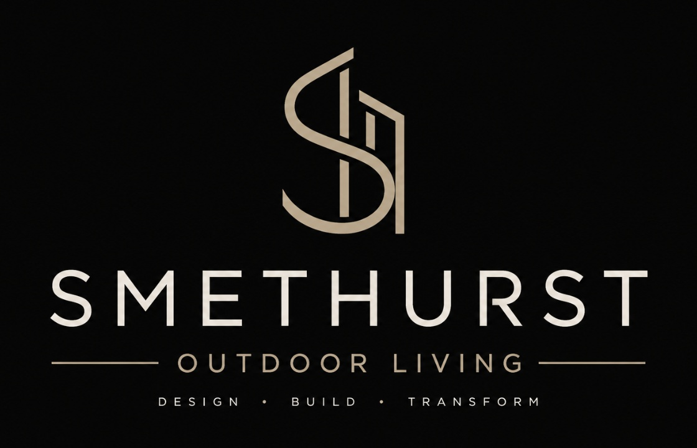
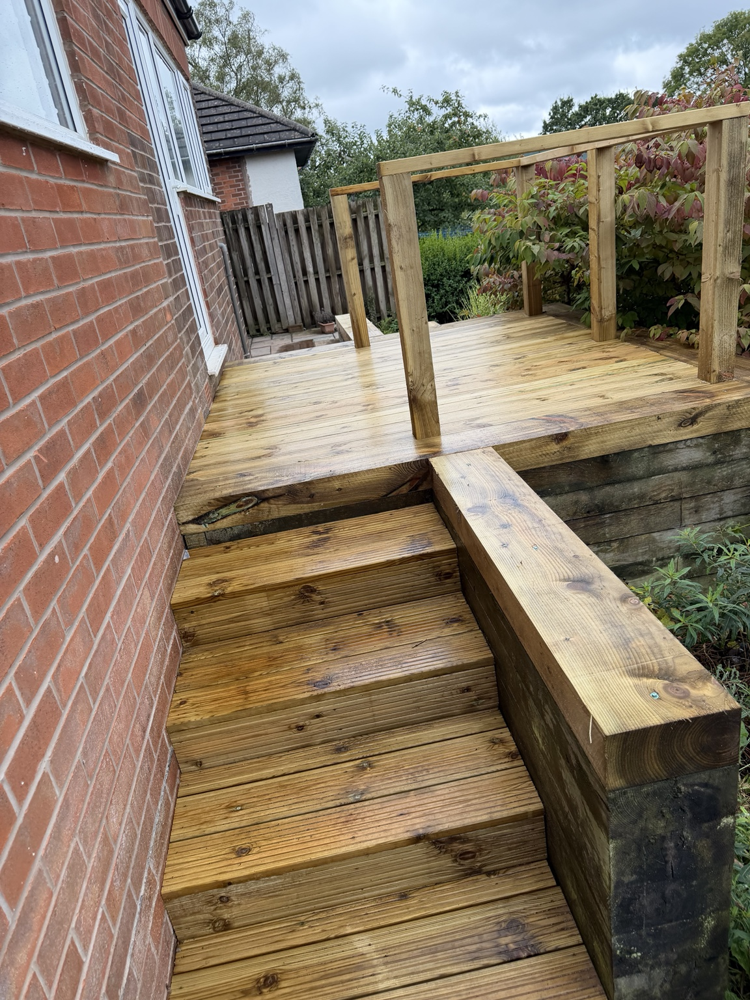
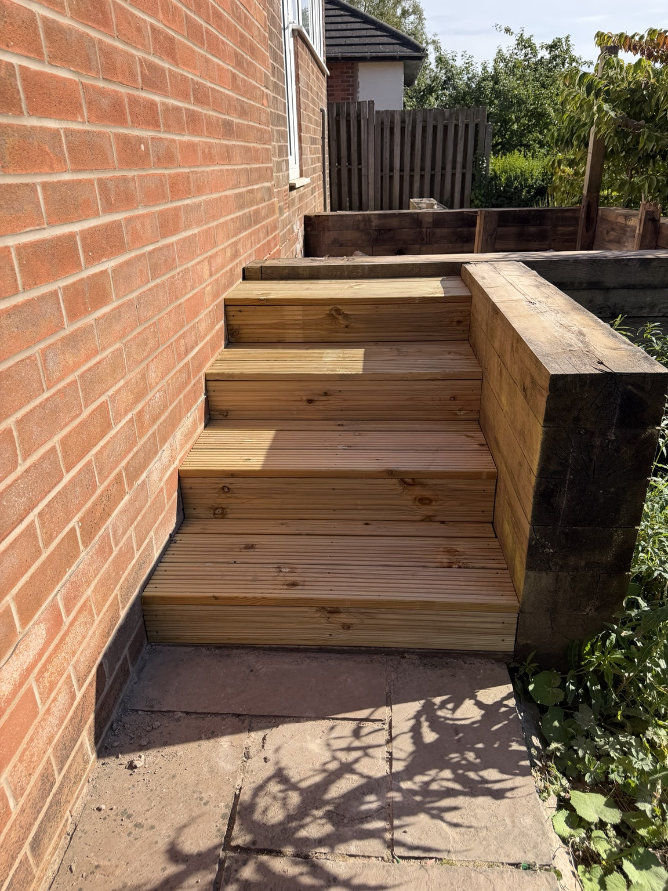

Decking
Purpose-built timber and composite decking for entertaining, relaxing and making better use of your garden.


BARTON · PRESTON · LANCASHIRE
Beautiful, practical outdoor spaces designed around your home and built with care.
Your garden should be somewhere you want to spend time. We create bespoke timber outdoor spaces that combine clean design, practical use and quality craftsmanship.
From a new deck or gate to a complete garden transformation, every project is designed around the property and the way you want to use it.
Start your project →Specialist joinery and outdoor construction for homes across Barton, Preston and surrounding Lancashire.
Purpose-built timber and composite decking for entertaining, relaxing and making better use of your garden.
Striking, practical structures that create a defined outdoor living area and add character to your garden.
Bespoke sheltered spaces designed for enjoying your garden in more seasons and more weather.
Hand-built timber gates tailored to your property, from traditional styles to clean contemporary designs.
Bring multiple elements together into one cohesive outdoor space — decking, structures, gates and bespoke timber features.

Every garden has different levels, access, proportions and requirements. We work with those details rather than forcing your project into a standard design.
A selection of recent work. Every photograph on this website is from our own projects.
Smethurst Outdoor Living is a specialist outdoor construction business based in Barton, Preston.
With a background in professional joinery, we combine practical craftsmanship with modern outdoor design to create spaces that look great and are built for everyday use.
Whether you already have a clear vision or just know that your garden needs a change, we'll work with you to turn the idea into a finished space.
We listen to your ideas and understand your garden and how you want to use it.
We develop a practical solution around your property and requirements.
We build your project with care, precision and attention to detail.
You get an outdoor space made specifically for you.
Tell us what you're thinking and we'll get back to you to discuss your project.
Based in Barton, Preston · Covering Lancashire & surrounding areas